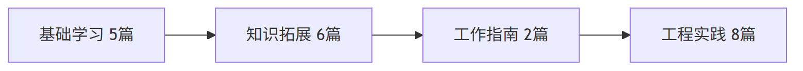

Wiki 产出：工作指南、知识拓展、基础学习、工程实践 21 篇

分类
篇数
内容
基础学习
5
PPTAgent 框架解析、九问 skill 机制、swarmflow 原语
知识拓展
6
4 种组装方式选型、公式插入 8 项目对比、样式模板调研
工作指南
2
PresentBench 30 条检查项、三 agent 产物设计原则
工程实践
8
4 分支审计 + 纯净性总结，50+ commit 可追溯
21 篇约 34 万字，5 个开源项目横向调研
公式方案 26 公式端到端验证，12 套 CSS 模板确定性物化